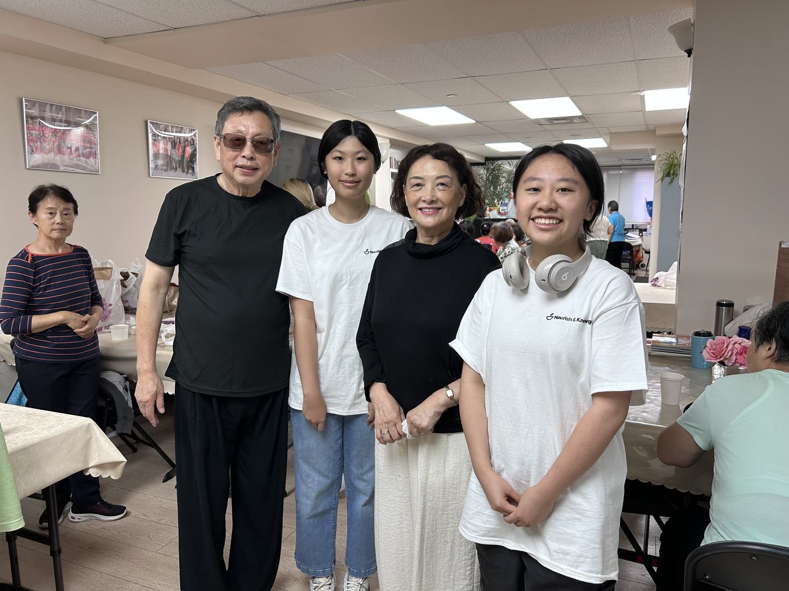

A chair is always free
No forms, no means test, no explanation required. If you are here, you are welcome.
About
The people, the story, and the reason we keep setting more places.

Our story
Nourish & Knowledge began with a handful of neighbors who noticed that people nearby were going without food, and without anywhere to land. So we cooked. We shared what we knew. People kept showing up, and we never found a good reason to stop.
Today the same idea runs every program: set the table, keep it open, and make sure nobody has to explain themselves to sit down.

How we work
Three commitments that hold whether you arrive to eat, to cook, or to volunteer.
No forms, no means test, no explanation required. If you are here, you are welcome.
Built by and for this community. The families we serve are the people next door.
Every meal and every lesson happens because a neighbor gave up an evening for it.
The team
Four people who would rather be cooking than talking about themselves.
Catherine started Nourish & Knowledge to fight hunger and support K-12 students and their families. She grew up around a kitchen table that was always open, and built this organization to extend the same welcome across her community.
Yiru co-founded Nourish & Knowledge to take on food insecurity in underserved communities. She works from one conviction: every student and family deserves access to the resources they need to get through the year.
Caren keeps the logistics honest. She builds the routing, the inventory, and the schedules that get meals and resources to more families each month, with dignity built into the process.
Austin runs everything technical. He builds and maintains the website and internal tools, keeps them reliable, and makes sure the software stays out of the way so the rest of the team can stay with the community.
Stop by, send a note, or take a shift whenever you have one to give.